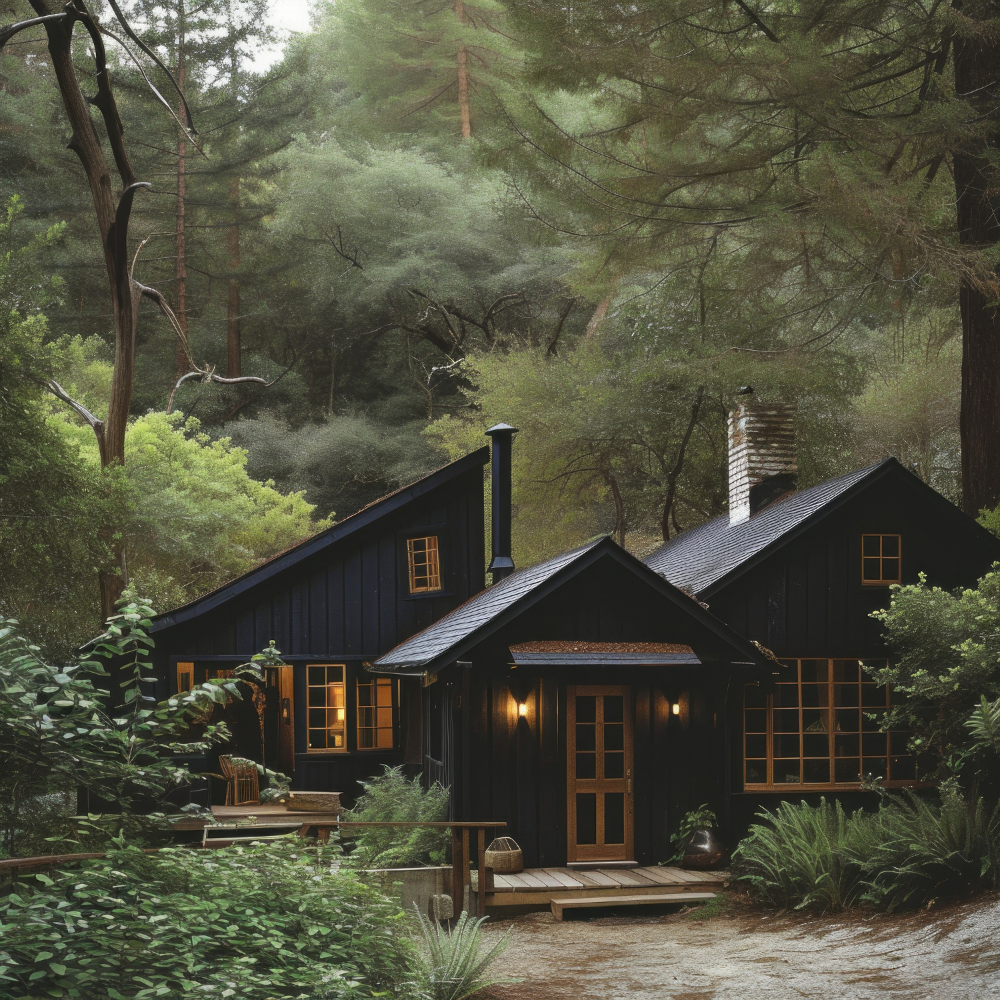
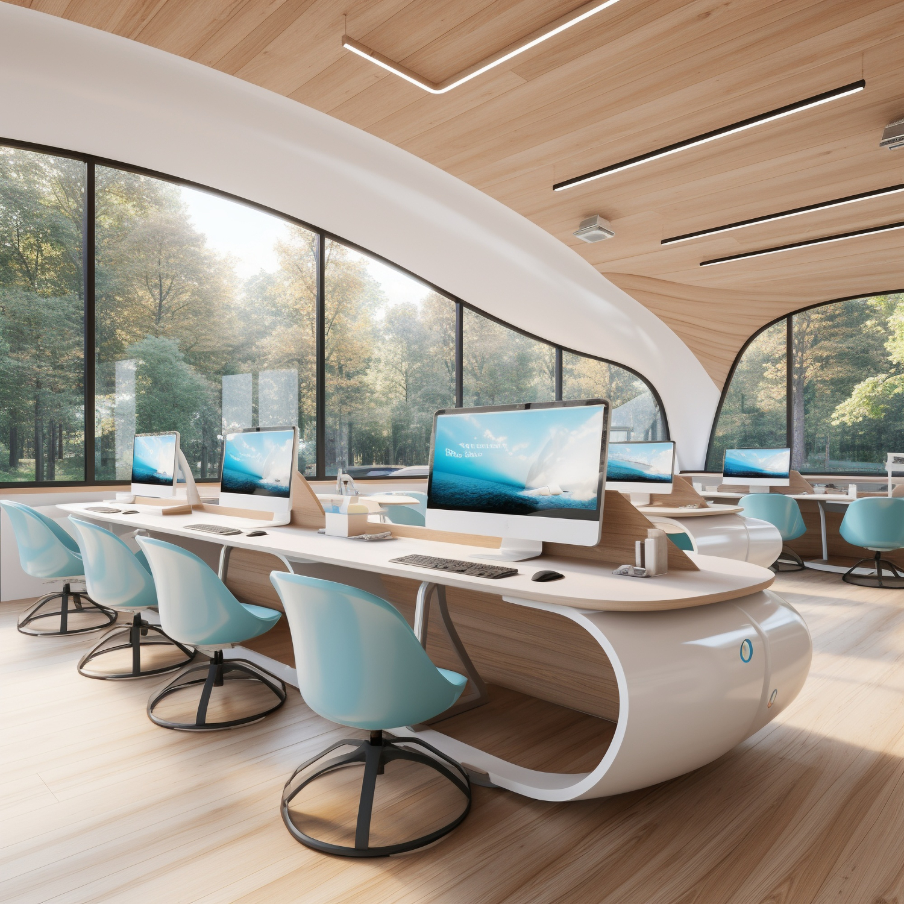

O projeto ficou incrível e totalmente alinhado com nossas necessidades. |

Contamos com uma equipe qualificada e apaixonada pelo que faz |

Trabalhamos com soluções que respeitam o meio ambiente |

vamos criar juntos o espaço dos seus sonhos |

Casa Floral
Endereço: Rua diamantada - Ouro Preto MG - 2020 - 920m²
Descrição: Um conjuto de três casa simples com dois andares, cada uma com cores suaves, e interiores simples
Estrutura: Três casa de tamanho medio, com interior simples e ligeiramente grande e esteticamente bonito

Casa Florestal
Endereço: Rua Tchuru ban - Juiz de Fora MG - 2020 - 8205m²
Descrição: Uma casa com estilo morderno e rustico com cores cinzetas e interior espaçoso
Estrutura: É uma casa grande e larga bem espaçosa, todo seu exteriro e interior tenso um desing moderno e mais quadrado e com masi janelas para maior entrada de luz natural

Cabana Pigmeu
Endereço: Rua 9° - Dias Tavares MG - 2006 - 630m²
Descrição: Uma cabana esscura e bem confortavel em meio a mata
Estrutura: É uma casa grande e larga bem espaçosa, todo seu exteriro e interior tem espaço de sobra para qualquer atividade

Escritorio
Endereço: Rua das flores Av Santa Luzia - Juiz de Fora MG - 2010 - 1630m²
Descrição: Escritorio simples e aberto com bastante iluminação natural
Estrutura: É um escritorio espaçoso

Casa Pisteres
Endereço: Av Rio Branco - Juiz de Fora MG - 2020 - 2630m²
Descrição: Uma casa com estilo morderno e rustico com cores cinzetas e interior espaçoso
Estrutura: É uma casa grande e larga bem espaçosa, todo seu exteriro e interior tenso um desing moderno e mais quadrado e com masi janelas para maior entrada de luz natural